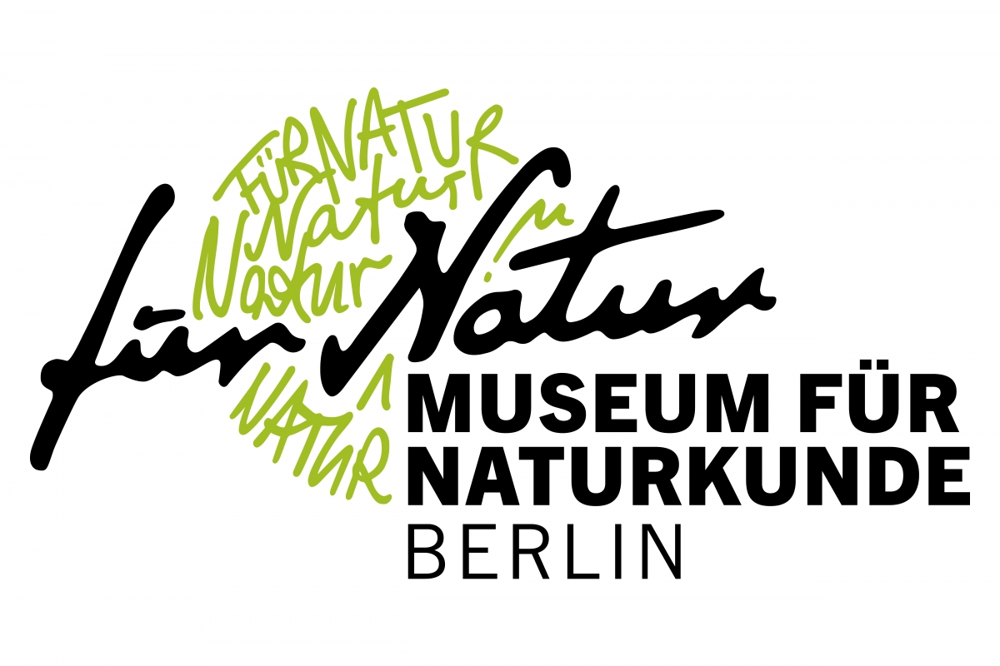
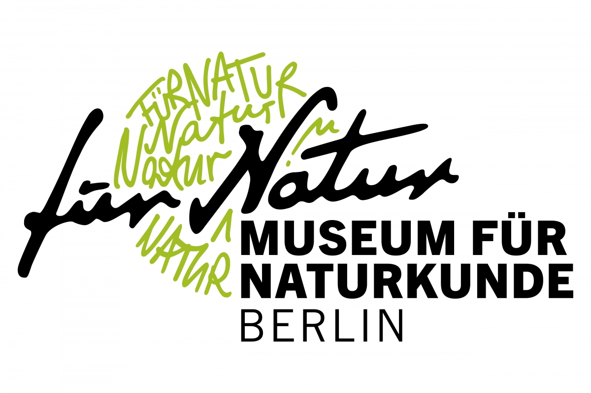

Hello!

I`m Melanie, a quantitative ecologist currently working at the Natural History Museum in Berlin, Germany. My work includes extinction risk influencing factors, geographic range size patterns, and recently the combination of climatic and biological data. I am interested in the possibilities of combining neontological and paleontological data to learn from past events about our possible future.
In November 2019 I will start a Postdoc at Aarhus University in the TropiToL project (Explaining the biological hyperdiversity of Tropical rainforests using the Tree of Life).
N E W S
The last part of my phd thesis has just been accepted for publication:
Tietje, M., Rödel, M.-O., Schobben, M. (accepted). The effect of geographic range and climate on extinction risk in the deep-time amphibian fossil record. Palaeogeography, Palaeoclimatology, Palaeoecology

2019 Melanie Tietje
Last update:


 
